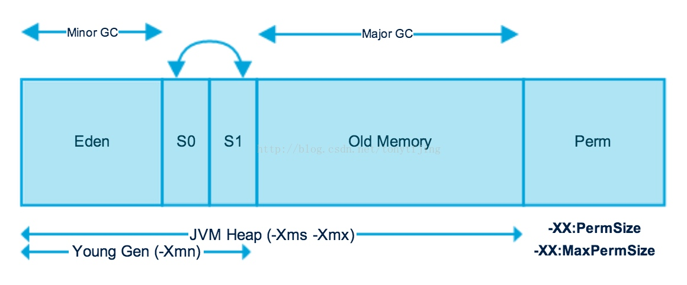
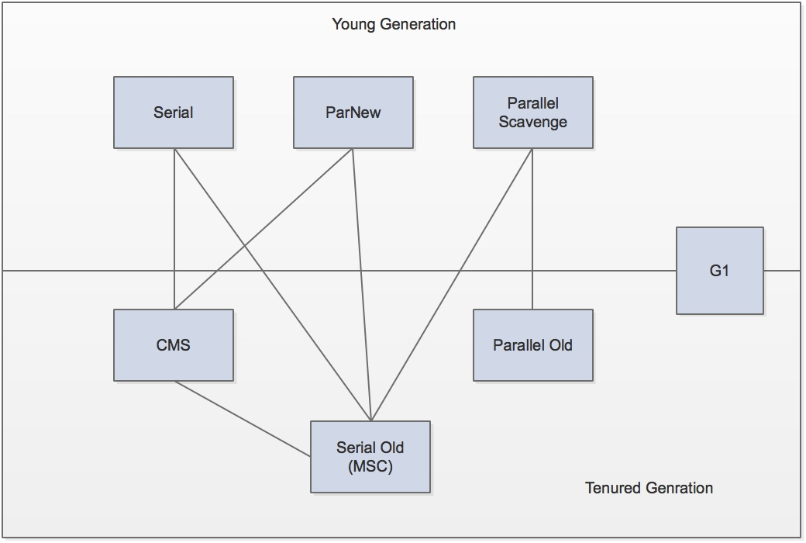
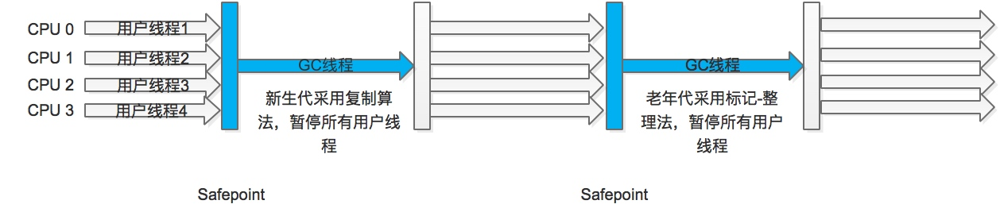
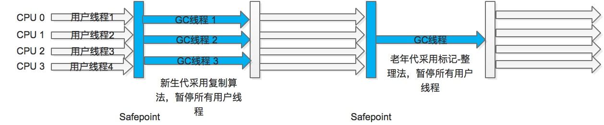
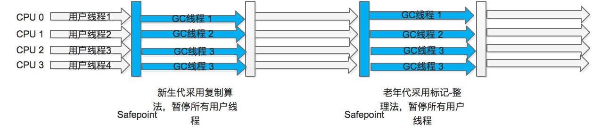
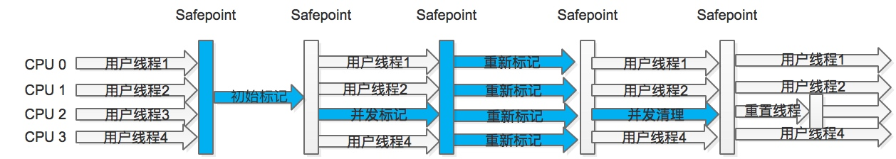
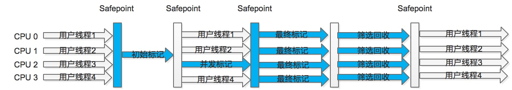

GC算法知识整理
垃圾回收算法主要解决三个问题：
1. 哪些内存需要回收
2. 什么时候回收
3. 如何回收
对象引用分析
引用计数法
引用计数法通过给每个对象添加一个引用计数器：被引用时，计数器加1，引用失效时，计数器减1；当计数器为0时表示对象不再被引用。这种实现简单，判定效率高，大部分情况下它是一种不错的算法，在微软的COM、使用ActionScript3的FlashPlayer、Python等语言中使用了引用计数法来管理内存。但是在Java虚拟机中没有使用这种算法，主要的原因是它很难解决对象之间循环引用的问题。
可达性分析
在主流的商用程序语言(Java、C#、LIsp)的主流实现都是通过可达性分析来判断对象是否存活的。可达性分析是从一系列的“GC Roots”对象作为起始点，开始向下搜索，搜索经过的路径叫做引用链，一个对象到GC Roots没有任何引用链相连，则说明这个对象是不可用的。
在Java语言中，可以作为GC Roots的对象有以下几种：
- 虚拟机栈（栈帧中的本地变量表）中引用的对象
- 方法区中类静态变量引用的对象
- 方法区中常量引用的对象
- 本地方法栈中Native方法引用的对象
引用类型
JDK1.2之前只有一种引用：强引用；在之后对引用的概念进行了扩充，将引用分为强引用(Strong Reference)、软引用(Soft Reference)、弱引用(Weak Reference)和虚引用(Phantom Reference)，引用强度依次减弱。
- 强引用，就是常用的普通赋值引用，只要有强引用在，垃圾收集器永远不会回收掉被引用的对象；
- 软引用，用来描述一些有用但是非必须可以回收的对象。系统会在发生内存溢出异常之前，将这些对象列入回收范围中进行第二次回收，如果本次内存回收还是没有足够的内存，才会抛出内存溢出异常。使用SoftReference类来实现软引用；
- 弱引用，强度比软引用更弱，被弱引用的对象只能生存到下一次垃圾收集发生之前。当垃圾收集器开始工作时，无论是否有足够的内存，都会回收只有弱引用的对象。使用WeakReference来实现弱引用；
- 虚引用，最弱的一种引用关系，又被称为幽灵引用或者幻影引用。一个对象是否有虚引用完全不影响其生存时间，也无法通过虚引用来取得一个对象实例。虚引用唯一的目的是当这个对象被收集器回收时收到一个系统通知。使用PhantomReference实现虚引用。
finalize方法
当对象为GC Roots不可达时不一定会被立刻销毁，需要至少经过两次标记过程才会真正被回收。对象被分析判断为不可用后会被第一次标记并且进行一次筛选，筛选的条件是对象是否有必要执行finalize方法，只有对象覆盖了finalize方法且虚拟机没有调用过其finalize方法才会被认为有必要执行，之后会将其放置在一个F-Queue队列中。虚拟机会启动一个低优先级的Finalizer线程去执行它，而且并不保证等待它运行结束。稍后虚拟机会对F-Queue队列中的对象进行第二次小规模的标记，如果对象执行了finalize中成功的被其他引用链上的对象引用，则在第二次标记中会被移出“即将回收”的集合。值得注意的时finalize只会被执行一次，对象不会被无限次的使用finalize逃脱被回收。
回收方法区
方法区中也会进行垃圾收集，只是性价比一般比较低。永久代中的垃圾回收主要收集两部分内容：废弃的常量和无用的类。
判断类是否“无用的类”需要满足3个条件：
- 该类的所有实例都已经被回收
- 加载该类的ClassLoader已经被回收
- 该类对应的java.lang.Class对象没有被引用，无法在任何地方通过反射访问该类的方法
在大量使用反射、动态代理、CGLib等ByteCode框架、动态生成JSP以及OSGi这类频繁自定义ClassLoader的场景都需要虚拟机开启类卸载功能，以保证永久代不会溢出。
垃圾收集算法
标记-清除算法
算法分为“标记”和“清除”两个阶段：首先标记出所有需要回收的对象，在标记完成后统一回收所有被标记的对象。这是最基础的收集算法，后续的算法都是在这种思路的基础上进行改进得到的。它主要有两点不足：一个是效率问题，标记和清除两个过程效率都不高；另外一个是空间问题，标记清除之后产生大量不连续的内存碎片。
复制算法
复制算法将可用的内存按容量划分为大小相等的两块，每次只使用其中的一块，当这一块的内存用完了，就将还存活的对象复制到另外一块上去，然后将已使用过的一块内存一次性清除，这样每次只需对半个区域的内存进行回收，避免了内存碎片的情况，只需要按序分配内存。实现简单，运行高效。只是这种算法只能使用一半内存，成本太高。
现在的主流虚拟机都使用这种算法来回收新生代，将新生代分为一块较大的Eden空间和两块较小的Survivor空间，每次使用Eden和一块Survivor空间，当回收时，将Eden和Survivor中还存活的对象一次性复制到另外一块Survivor中，一次性清理Eden和Survivor空间。HotSpot中默认Eden和Survivor的比例为8：1，只有10%的空间浪费。当Survivor内存不够用是，需要依赖年老代进行分配担保。
标记-整理算法
复制收集算法在对象存活率较高的情况下需要进行较多的复制操作，效率会变低，更关键的需要占用双倍的内存，因此在老年代使用这种算法并不合适。
根据老年代的特点出现了标记-整理算法，标记过程与标记-清除算法相同，标记完成后并不直接清理可回收对象，而是整理内存让所有存活对象都移动到内存的一端，然后清理边界之外的内存。
分代收集算法
当前商业虚拟机的垃圾收集都采用了分代算法，根据对象的存活时间不同将内存分成几块，一般分为新生代和老年代，然后根据各个年代不同的特点在不同的区域使用不同的收集算法。

HotSpot的算法实现
枚举根节点
安全点
安全区域
垃圾收集器

上图展示了7种作用于不同分代的收集器，如果两个收集器之间有连线，就说明它们可以搭配使用。
Serial收集器
Serial收集器是一个单线程的新生代收集器，使用复制算法。它进行垃圾收集时，必须暂停所有的用户线程。是Jvm client模式下默认的新生代收集器。在单个CPU的环境下，Serial收集器没有线程交互的开销，专心做垃圾收集自然可以获得最高的单线程收集效率。

Serial/Serial Old收集器运行示意图
ParNew(Parallel New)收集器
ParNew收集器是Serial收集器的多线程版本，除了使用多个线程进行垃圾收集之外，其他行为包括Serial收集器可用的所有控制参数、收集算法、Stop the World、对象分配规则、回收策略等都与Serial收集器完全一样。
ParNew收集器是唯一个可以与CMS收集器配合的多线程新生代收集算法，指定使用CMS收集器时，默认的新生代收集器也是ParNew。
在单CPU环境下ParNew的效率不如Serial，随着CPU数量的增多，效率才会高于Serial。

ParNew/Serial Old收集器运行示意图
Parallel Scavenge收集器(吞吐量优先收集器)
Parallel Scavenge收集器也是一个并发多线程的新生代收集器，也是使用的复制算法。特点是关注点与其他收集器不同，CMS等收集器关注的是尽可能地缩短垃圾收集时用户线程的停顿时间，而Parallel Scavenge的目标是达到一个可控制的吞吐量，吞吐量=程序运行时间/(程序运行时间+垃圾收集时间)
Serial Old收集器
Serial的老年代版本，单线程收集使用“标记-整理”算法，主要在JVM client模式下使用。
Parallel Old收集器
Parallel Old是Parallel Scavenge收集器的老年代版本，使用并发多线程收集用“标记-整理”算法实现。

Parallel Scavenge/Parallel Old收集器运行示意图
CMS收集器
CMS(Concurrent Mark Sweep)收集器是一种以获取最短的回收停顿时间为目的的收集器。CMS收集器基于“标记-清除”算法实现，整个收集过程大致分为四个阶段：
1. 初始标记(CMS init mark)
2. 并发标记(CMS concurrent mark)
3. 重新标记(CMS remark)
4. 并发清除(CMS concurrent sweep)
其中初始标记、重新标记两个阶段需要停顿其他用户进程。
初始标记仅仅只标记出GC Roots能够直接关联到的对象，速度很快；并发标记阶段是进行GC Roots根搜索算法阶段，会判断对象是否存活；重新标记阶段是为了修正并发标记期间，因用户进程继续执行而导致标记产生变动的那一部分对象的标记记录，这个阶段的停顿时间会比初始标记阶段稍长，但运行时间比并发标记阶段要短。
由于整个过程中耗时最长的并发标记和并发清除过程中，收集器线程都可以和用户线程一起工作，所以整体来说，CMS收集器的内存回收过程是与用户线程一起并发执行的。

Concurrent Mark Sweep 收集器运行示意图
CMS收集器的优点是并发收集、低停顿，但是存在三个明显的缺陷：
1. CMS收集器对CPU资源非常敏感。在并发阶段，虽然不会停顿用户线程，但是会占用CPU资源而导致应用程序变慢，总吞吐量下降。CMS默认启动的回收线程数是：(CPU数量+3)/4；
2. CMS无法处理浮动垃圾，可能出现“Concurrent Mode Failure”，失败后会导致另一次FullGC的产生。由于CMS并发清理阶段用户线程还在运行，伴随程序的运行自然会有新的垃圾不断产生，这一部分垃圾出现在标记过程之后，CMS无法在本次收集中处理它们，只能留到下次GC进行清理。这一部分垃圾被称为“浮动垃圾”。由于CMS收集器收集阶段用户线程还要运行，需要预留一部分内存空间提供给收集时的用户线程使用。在默认配置下，CMS收集器在老年代使用了68%的内存空间时就会被激活，可以通过-XX:CMSInitiatingOccupancyFraction的值来设置触发百分比。要是CMS运行期间预留的内存无法满足程序其他线程的需要，就会出现“Concurrent Mode Failure”失败，这时虚拟机会启动后备预案：临时启动Serial Old收集器来重新进行老年代的垃圾收集，这样停顿时间就会很长了；
3. CMS是基于“标记-清除”算法实现的收集器，会产生大量的空间碎片。空间碎片太多时，会给对象分配带来麻烦，内存空间找不到足够的连续空间时会提前触发Full GC。为了解决这个问题，CMS收集器提供了一个-XX:UseCMSCompactAtFullCollection开关参数，用于在Full GC之后增加一个碎片整理的过程，还可以通过-XX:CMSFullGCBeforeCompaction参数设置执行多少次不压缩的Full GC之后，进行一次碎片整理过程。
G1(Gebage-First)收集器
G1不再是只管理新生代或者老年代，而是将整个Java堆划分成多个大小相等的独立区域(Region)，虽然还有新生代和老年代的区别，但不同代之间不再是物理隔离的，它们都是一部分Region的集合。
G1通过跟踪各个Region里面的垃圾堆积的价值大小（回收所获得的空间大小以及回收所需时间的经验值），在后台维护一个优先队列，每次根据允许的收集时间，优先回收价值最大的Region。
在G1收集器中，Region之间的对象引用以及其他收集器中的新生代和老年代之间的对象引用，虚拟机都是使用Remembered Set来避免全堆扫描。G1中每个Region都有一个与之对应的Remembered Set，虚拟机发现程序在对Reference类型的数据进行写操作时，会产生一个Write Barrier暂时中断写操作，检查Reference引用的对象是否处于不同的Region之中，如果是，便通过CardTable把相关的引用信息记录到被引用对象所属的Region的Remembered Set之中。当进行内存回收时，在GC Roots的范围中加入Remembered Set即可保证不对全堆扫描也不会遗漏。
G1收集器的特点：
- 并行与并发：G1能够充分利用多CPU来缩短Stop-The-World停顿的时间，部分其他收集器原本需要停顿的GC动作，G1收集器可以通过并发的方式让Java程序继续运行；
- 空间整合：G1整体上看是基于“标记-整理”算法实现，从局部(两个Region之间)上看是基于“复制”算法实现的，避免了内存碎片的问题；
- 可预测的停顿：G1除了追求低停顿，还能建立可预测的停顿时间模型。
在G1中有一类特殊Region，叫Humongous区域，如果一个对象占用的空间超过分区容量的50%以上，G1收集器就会认为是一个巨型对象。这些巨型对象，默认直接会被分配在老年代。G1划分了Humongous区，用来专门存放巨型对象。如果一个H区装不下一个巨型对象，那么G1会寻找连续的H分区来存储。为了找到连续的H区，有可能会启动Full GC。
对象分配策略
对象分配分为3个阶段：
1. TLAB(Thread Local Allocation Buffer)线程本地分配缓冲区
2. Eden区分配
3. Humongous区分配
TLAB的目的是为了是提高对象内存分配的效率，如果对象在线程共享内存区域分配，需要采用同步机制来管理这些空间的空闲内存指针。在Eden空间中，每个线程都有一个固定的分区用来分配对象，即TLAB。这样分配对象时，就不需要同步机制了。
对TLAB空间中无法分配的对象，JVM会尝试在Eden空间中进行分配。如果Eden空间无法容纳，就只能在老年代中进行分配。
G1的两种GC模式
G1提供了两种GC模式，Young GC和Mixed GC，都是STW的。
G1 Young GC
Young GC分为5个阶段
1. 根扫描：静态和本地对象被扫描
2. 更新Remembered Set：处理dirty card队列更新Remembered Set
3. 处理Remembered Set：检测从年轻代指向老年代的对象
4. 对象拷贝：拷贝存活的对象到Survivor/Old区
5. 处理引用队列：软引用、弱引用、虚引用处理
G1 Mixed GC
Mixed GC分为两个阶段
1. 全局并发标记(Global concurrent marking)
2. 拷贝存活对象(evacuation)
G1的收集过程
G1的收集过程大致可以分为4个阶段
1. 初始标记(STW)：对GC Roots能直接关联的对象进行标记，且修改TAMS(Next Top at Mark Start)的值(Java 10由单线程改为多线程)。
2. 并发标记：从GC Roots开始对整个堆进行分析，整个阶段用时较长，可以与用户线程并发执行；
3. 最终标记：将上阶段中产生的Remembered Set Logs与Remembered Set合并，完成标记。该阶段会STW，但是可以并行执行。
4. 筛选回收(STW)：对各个Region的回收价值和成本进行排序，根据用户期待的GC停顿时间来执行回收计划。G1 会识别完全空闲区域和可供进行Mixed
GC 的区域，清理阶段将空白区域重置并返回到空闲列表时为部分并发。
